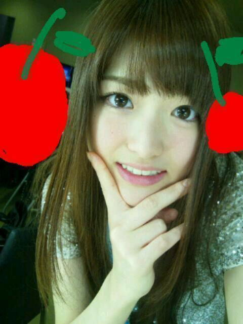

2012/1025Thu題名長くしようとしたけど、うちの携帯では無理みたいやから、や〜めんぴっ(o・・o)
はろーっ(o・・o)/
松村沙友理ですっ(o・・o)/
駅でカードをばらまきました！
まいやんとななちぇまるが
ひろってくれたよ！
優しさにふれたよ♪
最近かずみが
牡蠣かき牡蛎かき言うから
牡蠣が食べたくなったよー(>_<)
広島いくしかないな！
富山いくしかないな！
３ｒｄのキャンペーンときに
みんな富山で牡蛎食べとったよね！？
牡蠣食べたい〜
牡蠣〜牡蛎〜柿〜夏季〜
昨日はコ・フェスタ2012に
出演さしていただきました！
国際的なイベントに
乃木坂４６が出さしてもらえたのは
すごく嬉しいです///
これを機に日本の色んなことが
もっと世界に浸透するといいな☆
あわよくば、乃木坂も
国際的なグループになり
ブラジルまでパフォーマンスを
届けられるようなグループに
なれたらもっといいな☆
ブラジルのみなさん
こんにちはーっ(o・・o)/笑
まえのブログの写真は
健康診断で採血をしたのでした(ゝω・´★)
採血より、自分の耳を晒してしまったのが恥ずかしい・・・(*''*)ぽっ
献血じゃなくてすみませんm(__)m
もう少し注射が怖くなくなったら
献血します！！
この採血の時もな
怖すぎて針を刺す直前に
「こわい〜(>_<)」って腕を引っ込めたら
看護師さんに怒られた(笑)
何してんねん、２０歳(笑)

この写真、うちの細部まで写ってる気がする...
最近のカメラは怖い////
ほなら、またね〜(*^^*)
さいなら♪
2012/10/25 15:18
コメント(471)
おつかれ
難しい漢字が多くて…………
りんごだよ
今日のニュースでみたよー
みくもが英語うま過ぎて(°□°;)
注射は痛くないよー
さゆりんごパンチよりは（笑）
またコメントするね
今日のニュースでみたよー
みくもが英語うま過ぎて(°□°;)
注射は痛くないよー
さゆりんごパンチよりは（笑）
またコメントするね
やっぱり採血でよかったんだ
いろんなイベントに参加できて
羨ましいよ
カードばらまいたって
そんなにいろんなカード持ってるの？
さゆりんの写メ 左目がよってるような
気がするんだけど
いろんなイベントに参加できて
羨ましいよ
カードばらまいたって
そんなにいろんなカード持ってるの？
さゆりんの写メ 左目がよってるような
気がするんだけど
お疲れ様(＾ｰ^)ノ
注射((((；ﾟДﾟ)))))))
注射((((；ﾟДﾟ)))))))
自分もちょっと注射怖い(笑)
関西は京都しかなさそうやからさゆりんのために京都行きます(o^-^o)
楽しみにしてまーす(*/ω＼*)
関西は京都しかなさそうやからさゆりんのために京都行きます(o^-^o)
楽しみにしてまーす(*/ω＼*)
さゆりん可愛い～～＼(^o^)／
20歳本当になにしてんねんww
さすがに注射針は.....
でも採血のって普通のより太いんだよねー
俺も嫌い（笑）
かずみさん牡蠣牡蠣めっちゃいってるよねw
まぁ牡蠣フライ弁当の写メが可愛すぎて得したけど
☆☆☆(なお・ω・やん)☆☆☆
20歳本当になにしてんねんww
さすがに注射針は.....
でも採血のって普通のより太いんだよねー
俺も嫌い（笑）
かずみさん牡蠣牡蠣めっちゃいってるよねw
まぁ牡蠣フライ弁当の写メが可愛すぎて得したけど
☆☆☆(なお・ω・やん)☆☆☆
献血が趣味みたくなってきたので
健康診断で刺される針はたいして痛くない。
献血の時の針は、何回刺しても痛いけどね(笑)
注射耐性がついた！
健康診断で刺される針はたいして痛くない。
献血の時の針は、何回刺しても痛いけどね(笑)
注射耐性がついた！
健康診断やったのか(oﾟ▽ﾟ)o
今日の写真可愛すぎだZ(≧▽≦)
今日の写真可愛すぎだZ(≧▽≦)
さゆりんさゆりんさゆりんりん
さゆりんさゆりんさゆりんごー！
字に書き起こしてみたらなんか変になった（笑）
さゆりんごパーンチ！！
さゆりんさゆりんさゆりんごー！
字に書き起こしてみたらなんか変になった（笑）
さゆりんごパーンチ！！
HTC J きれいやもんねo(((*°▽°*)))o
さゆりんごパーンチ

採血だったかぁー。
コ・フェスタお疲れさま。
MAN WITH A MISSIONもでたんだね。
乃木坂が世界的なアイドルグループになれるよ応援するよ
またねー。
コ・フェスタお疲れさま。
MAN WITH A MISSIONもでたんだね。
乃木坂が世界的なアイドルグループになれるよ応援するよ
またねー。
こんにちは!!
注射は恐がると危ないよ!!
変なとこ刺さるよ。
あー、牡蠣食べたい。
注射は恐がると危ないよ!!
変なとこ刺さるよ。
あー、牡蠣食べたい。
こんにちりんごヨーグルトーっ(^o^)/
柿のほうだったら最近食べたよ
怖いーまではいいかもしれないけど
腕引っ込めるまではやりすぎだったかも。笑
柿のほうだったら最近食べたよ
怖いーまではいいかもしれないけど
腕引っ込めるまではやりすぎだったかも。笑
まいやんとなぁちゃん優しいさかい!!
もぅカードばらまいちゃダメよ！笑
牡蠣食べたいなぁ～
広島やったらぐるかーミニ握でさゆりん行ってたはずやから
牡蠣食べたんちゃん？
富山も牡蠣なん？
初めて知ったわぁ!!
注射はインフルエンザのやつだけ
ちょっと痛いけど他の注射は平気やでぇ(*^^*)
風邪ひかんようにねぇ♪
明日ガールズポップ行くさかい!!
さゆりんおるやろ!?
がんばりんごー!!!!
んなばいなら(⌒0⌒)／~~
もぅカードばらまいちゃダメよ！笑
牡蠣食べたいなぁ～
広島やったらぐるかーミニ握でさゆりん行ってたはずやから
牡蠣食べたんちゃん？
富山も牡蠣なん？
初めて知ったわぁ!!
注射はインフルエンザのやつだけ
ちょっと痛いけど他の注射は平気やでぇ(*^^*)
風邪ひかんようにねぇ♪
明日ガールズポップ行くさかい!!
さゆりんおるやろ!?
がんばりんごー!!!!
んなばいなら(⌒0⌒)／~~
松村さんいつもお疲れ様です(^^)
牡蠣は僕は食わずぎらいなので多分食べたことないです（笑）
でもこれをきに食べて見たいです！！
注射僕も怖いので怖いのわかりますけど健康の為に頑張りましょう！！
これからも頑張っていきましょう
牡蠣は僕は食わずぎらいなので多分食べたことないです（笑）
でもこれをきに食べて見たいです！！
注射僕も怖いので怖いのわかりますけど健康の為に頑張りましょう！！
これからも頑張っていきましょう
採血こわいよねー
でもあんまりいたくないかも
でもあんまりいたくないかも
あ〜健康診断だったのね。
さゆりん、注射嫌いなんだ〜。まああまり好きな人はいないと思うけどね。
その恥ずかしがってる、"さゆみみ"可愛いじゃん!
さゆりん全部が可愛いよ〜。
牡蠣食べにまた広島おいでシャンプー。
広島ジャなくても、中国地方に来て欲しいな〜。
無理言ってスミマセン。
さゆりん、注射嫌いなんだ〜。まああまり好きな人はいないと思うけどね。
その恥ずかしがってる、"さゆみみ"可愛いじゃん!
さゆりん全部が可愛いよ〜。
牡蠣食べにまた広島おいでシャンプー。
広島ジャなくても、中国地方に来て欲しいな〜。
無理言ってスミマセン。
注射は、なんか慣れないよね(>_<)
注射好きな人は、あんまりいないよね(笑)
さゆりんは相変わらず可愛いなぁ～(#^_^#)
注射好きな人は、あんまりいないよね(笑)
さゆりんは相変わらず可愛いなぁ～(#^_^#)
やほほ(^-^)
俺駅で小銭落としまくったことならあるわ(汗)
あーゆうときみんな拾ってくれるけん優しすぎて泣けるw
牡蠣なら広島おいでー
俺のホームやもん＼(^o^)／
でも俺牡蠣食べれんけどなぁ(泣)
イベントで世界の人に知ってもらうのは滅多にないことだと思うけん貴重な体験できてよかったね♪
ブラジルの人にも知ってほしいな
ほんまに最近のカメラ怖いw
じゃあねー
俺駅で小銭落としまくったことならあるわ(汗)
あーゆうときみんな拾ってくれるけん優しすぎて泣けるw
牡蠣なら広島おいでー
俺のホームやもん＼(^o^)／
でも俺牡蠣食べれんけどなぁ(泣)
イベントで世界の人に知ってもらうのは滅多にないことだと思うけん貴重な体験できてよかったね♪
ブラジルの人にも知ってほしいな
ほんまに最近のカメラ怖いw
じゃあねー
こんにちさゆりん(´∀｀)
諦めたんかいっ
早いな。笑
まあ機械のせいで無理ならしゃーないな！
個人情報ばら撒いたらあかんww
拾ってもらえて良かったねっ
さゆりん牡蠣好きなん??
俺苦手(;´∀｀)
今度おいしい食べ方教えてよっ
ただの採血かいなっ笑
インフルとかの予防注射も打っときや!!
刺す直前は危ないからやめなさい。笑
何、細部まで写ってるって。笑
まー最近のスマホのカメラは性能超いいよね(＾∀＾)
なんでも綺麗に写る！
つーか可愛い表情してるなっ!!
なんか好きやわ～笑
んじゃまたね！ノシ
諦めたんかいっ
早いな。笑
まあ機械のせいで無理ならしゃーないな！
個人情報ばら撒いたらあかんww
拾ってもらえて良かったねっ
さゆりん牡蠣好きなん??
俺苦手(;´∀｀)
今度おいしい食べ方教えてよっ
ただの採血かいなっ笑
インフルとかの予防注射も打っときや!!
刺す直前は危ないからやめなさい。笑
何、細部まで写ってるって。笑
まー最近のスマホのカメラは性能超いいよね(＾∀＾)
なんでも綺麗に写る！
つーか可愛い表情してるなっ!!
なんか好きやわ～笑
んじゃまたね！ノシ
こんにちは沙友理ちゃん 携帯ってみんな同じ物使っているんでしょう？
カキのフライも好きでしょう、美味しいよね(^_^)/明日はフライの日だよ何たべる？
明日はzepp 横浜と行くからよろしく。 では、また
カキのフライも好きでしょう、美味しいよね(^_^)/明日はフライの日だよ何たべる？
明日はzepp 横浜と行くからよろしく。 では、また
俺ほっともっとでバイトしてるんだけど
今牡蠣フライ弁当売ってるよー
よかったら食べてみて！
体に気をつけて頑張ってね♪
今牡蠣フライ弁当売ってるよー
よかったら食べてみて！
体に気をつけて頑張ってね♪
こんにちわー
注射痛かったですか？
nanaもいつか注射しに行くと思いますw
インフルエンザ予防(？)みたいなw
お疲れ(*゜∀゜)v
針怖がる
って可愛いわ(笑
俺は何回もやったことあるから馴れたよ・∀・
今は健康だからもうしないけど（笑）
まいやん、ななせまる?
優しいなー!/ωヾ
愛されてるさゆりん♪←
じゃあ~ヾ(○゜▽゜○)
今日もさゆりんごパンチ
かましてこうか!
またコメントするぜよ!
*`・∀・)
針怖がる
って可愛いわ(笑
俺は何回もやったことあるから馴れたよ・∀・
今は健康だからもうしないけど（笑）
まいやん、ななせまる?
優しいなー!/ωヾ
愛されてるさゆりん♪←
じゃあ~ヾ(○゜▽゜○)
今日もさゆりんごパンチ
かましてこうか!
またコメントするぜよ!
*`・∀・)
なんかこの写真のさゆりんに妙に引き込まれる…
目がなんか…
一週間風邪治らなくて意識朦朧としてるからかもしれないけどね(*_*)
目がなんか…
一週間風邪治らなくて意識朦朧としてるからかもしれないけどね(*_*)
経産大臣もフェスにいたね
いよいよ乃木坂も日本を代表するアイドルグループになったってことか！
いよいよ乃木坂も日本を代表するアイドルグループになったってことか！
まいやんとなーちゃんめっちゃ優しいやん(*^^*)
俺も牡蠣食べたい(>_<)
乃木坂46ならすぐ国際的なアイドルなれるよ♪健康診断か！！
献血と思ってしまった
はずれちゃった(^^;
俺も注射きらい( ノД`)…
痛いけ腕引っ込めてしまう(ノ_・。)
俺も牡蠣食べたい(>_<)
乃木坂46ならすぐ国際的なアイドルなれるよ♪健康診断か！！
献血と思ってしまった
はずれちゃった(^^;
俺も注射きらい( ノД`)…
痛いけ腕引っ込めてしまう(ノ_・。)
まいやん、ななせ優しい～
さすが俺が認めただけある笑
コフェスタおつかれさまいやん(o^_^o)
牡蠣俺も食べたいんよね～
今度一緒に食べに行こうか！←
今日もおつかれさまいやん(o^_^o)
さかちょん
なんかこの写真のさゆりんに妙に引き込まれる…
目がなんか…
一週間風邪治らなくて意識朦朧としてるからかもしれないけどね(*_*)
目がなんか…
一週間風邪治らなくて意識朦朧としてるからかもしれないけどね(*_*)
さゆりん(((o(*ﾟ▽ﾟ*)o)))
ばらまいちゃったか( ´Д`)y━･~~
優しいね(((o(*ﾟ▽ﾟ*)o)))
ぉめでとーっANDおつかれーっ(^O^)／
乃木坂は有名に、なっていく(￣▽￣)
さゆりん可愛い\(//∇//)\
ばらまいちゃったか( ´Д`)y━･~~
優しいね(((o(*ﾟ▽ﾟ*)o)))
ぉめでとーっANDおつかれーっ(^O^)／
乃木坂は有名に、なっていく(￣▽￣)
さゆりん可愛い\(//∇//)\
看護師怖ッ(笑)
献血ってかなり血採られるらしいよ
確かに牡蠣食べたーーい！
柿は食べたくない！
じゃあね
リオン＠ななみん命名
献血ってかなり血採られるらしいよ
確かに牡蠣食べたーーい！
柿は食べたくない！
じゃあね
リオン＠ななみん命名
おどろきりんごっ！
会社でト○レ休憩中に何気なくブログ見たら、さゆりん更新してるーーー！？
(つくづく最近ト○レで見るな)
い、いったいこんなに頻繁に更新してどうした！！？
さゆりんが頻繁に更新するとなにかが起きるからなぁ…（笑）
いや嬉しいんやけど…
また後でコメします
やっぱり、ト○レで見てもさゆりん写メは女神やった
会社でト○レ休憩中に何気なくブログ見たら、さゆりん更新してるーーー！？
(つくづく最近ト○レで見るな)
い、いったいこんなに頻繁に更新してどうした！！？
さゆりんが頻繁に更新するとなにかが起きるからなぁ…（笑）
いや嬉しいんやけど…
また後でコメします
やっぱり、ト○レで見てもさゆりん写メは女神やった
さゆりんこんにちは♪
採血ですか！
献血かと思ったのに〜(´･_･`)笑
牡蠣おいしいですよね！
牡蠣は宮城県産のものが
おいしいですよっ(^O^)
とか言って地元をアピール
してみました(笑)
ではではっ
明日も一日顔晴って
ください(*^^*)
耳NGってなんでなんよー。
さゆりんごの耳りんごをもっと見せりんご笑
注射苦手なんだね。
おれは全然平気だよー。
アトラクションのひとつぐらいな感覚だぜぇ。
ワイルドだろぉ。
・・・ん～このネタそろそろ？笑
写真写り問題ないよー。細部も可愛いよー。
さゆりんごの耳りんごをもっと見せりんご笑
注射苦手なんだね。
おれは全然平気だよー。
アトラクションのひとつぐらいな感覚だぜぇ。
ワイルドだろぉ。
・・・ん～このネタそろそろ？笑
写真写り問題ないよー。細部も可愛いよー。
私も注射こわい(´；ω；`)
貧血検査したあと貧血になって倒れてからずっとトラウマ（笑）
献血したいけど
そんな事したらまた即倒れちゃうんだろうな…(￣-￣)（笑）
この写メのさゆりん可愛い！！
肌めっちゃ綺麗～(^o^)*゜☆
貧血検査したあと貧血になって倒れてからずっとトラウマ（笑）
献血したいけど
そんな事したらまた即倒れちゃうんだろうな…(￣-￣)（笑）
この写メのさゆりん可愛い！！
肌めっちゃ綺麗～(^o^)*゜☆
健康診断の採血だったんだ
てっきりインフルエンザかとw
↑まだ早いよねw
牡蠣おいしいよね！d(>∀・)
こっちの北海道でも10月の頭くらいから解禁になったんよー
おいしいよ 特にカキフライはうまし
写真めっさかわいい！！
おれのハートがさゆりんごによってうちぬかれてしまいました←
では またねん
てっきりインフルエンザかとw
↑まだ早いよねw
牡蠣おいしいよね！d(>∀・)
こっちの北海道でも10月の頭くらいから解禁になったんよー
おいしいよ 特にカキフライはうまし
写真めっさかわいい！！
おれのハートがさゆりんごによってうちぬかれてしまいました←
では またねん
さゆりんやっほー!*北海道人*です。今日も１日お仕事お疲れ様です。冷え込んで来ましたが,風邪をひかないように体調に気をつけて乃木坂のお仕事頑張って下さいね!今だに私も注射のチクっとした感じが少し苦手ですよ(*_*)/色んな国の方に乃木坂46を好きでファンになってくれたら私も嬉しいです。さゆりん神推しな*北海道人*です!明日も元気にさゆりんごパワーでお互いに頑張りましょう(≧∇≦)さゆりん大好きー!!!
お疲れ！
ブラジルのみなさん
こんにちはー
っていうのを見て
落ち込んでたけど
元気でた！
ではでは。
今日も1日頑張りまいやん！！
ブラジルのみなさん
こんにちはー
っていうのを見て
落ち込んでたけど
元気でた！
ではでは。
今日も1日頑張りまいやん！！
写真かわいすぎ(((゜Д°;)))
明後日個別行きまーす！
さゆりんに会えるの楽しみにしてまーす！
明後日個別行きまーす！
さゆりんに会えるの楽しみにしてまーす！
やっほー(o・・o)
牡蠣、宮城もじゃなかったっけ？(笑)
注射とかは、まあ、針入れるのガン見するわ。
見てない方が何されるか分からんから不安(笑)
故に全く苦手意識とかないわ
明日はいよいよライヴですな。
さゆりんに言った物は用意してあるんで探してやってください(笑)
感想は明後日で。
牡蠣、宮城もじゃなかったっけ？(笑)
注射とかは、まあ、針入れるのガン見するわ。
見てない方が何されるか分からんから不安(笑)
故に全く苦手意識とかないわ
明日はいよいよライヴですな。
さゆりんに言った物は用意してあるんで探してやってください(笑)
感想は明後日で。
採血だったのかーはずれたー(＞＜)
注射はなー痛いけど針が刺さる瞬間は見てたい(笑)
注射はなー痛いけど針が刺さる瞬間は見てたい(笑)
牡蠣はそんなに食べたことないわ(*^^*)
かんかんです(^O^)／
更新お疲れ様です(￣▽￣)
麻衣ちゃんとなーちゃん優しいな(((o(*ﾟ▽ﾟ*)o)))
注射俺も苦手だわ（ーー；）
さゆりんいつもありがとう☆*:.｡. o(≧▽≦)o .｡.:*☆
更新お疲れ様です(￣▽￣)
麻衣ちゃんとなーちゃん優しいな(((o(*ﾟ▽ﾟ*)o)))
注射俺も苦手だわ（ーー；）
さゆりんいつもありがとう☆*:.｡. o(≧▽≦)o .｡.:*☆
血が嫌い(泣)
健康診断お疲れ様(o^－^o)
注射は怖がらないよう頑張ってねd(⌒ー⌒)!
さゆりん頑張れ＼(^o^)／
飛鳥のようにはできひんのか(´-ω-`)
ほんならまた( ´∀`)/~~
どうもーこんにちはテスト撃沈かねまさで～す!!
さゆりん牡蠣好きなんや
僕牡苦手やわー(>_<)
柿もあんまり食べんしかきとは
相性イマイチやわー(T_T)
でも注射は全然大丈夫やねん
献血もこの前したし
針全く痛くない最近の医療はすごいわ(^^)/
さゆりんとは真逆やわ(笑)
ほなまたねー(o^^o)
右手にヒミタイ＼(^^
さゆりん牡蠣好きなんや
僕牡苦手やわー(>_<)
柿もあんまり食べんしかきとは
相性イマイチやわー(T_T)
でも注射は全然大丈夫やねん
献血もこの前したし
針全く痛くない最近の医療はすごいわ(^^)/
さゆりんとは真逆やわ(笑)
ほなまたねー(o^^o)
右手にヒミタイ＼(^^
さゆりんごお疲れさま。
俺も注射嫌いだよ。
さゆりんごは、好きだけど。笑
あさって会えるの楽しみ。
よろしくお願いします。
俺も注射嫌いだよ。
さゆりんごは、好きだけど。笑
あさって会えるの楽しみ。
よろしくお願いします。


俺も注射針苦手´д` ;
こわいよねー。
最近のカメラすごいよね…
今日も一日お疲れ様です。